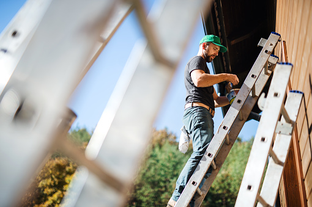

My most preffered job

- Most preferred: Painter- I had a good level of independence and understanding of the occupation, helped me feel important and that I contributed to my community. Admittedly this is more rose tinted as I haven't been a painter in years, however, it was easy, and after the fact it kind of feels meaningful, since I got credited for helping paint our gym, more than what I can say about most jobs.
(Equipment involved) We set up scaffolding, sometimes ladders for lower areas, but generally we were up high, about 30 meters high, a story or so. (conclusion) My career as a painter was limited to say the least, more due to me being kind of stupid at the time and taking for granted what I was real